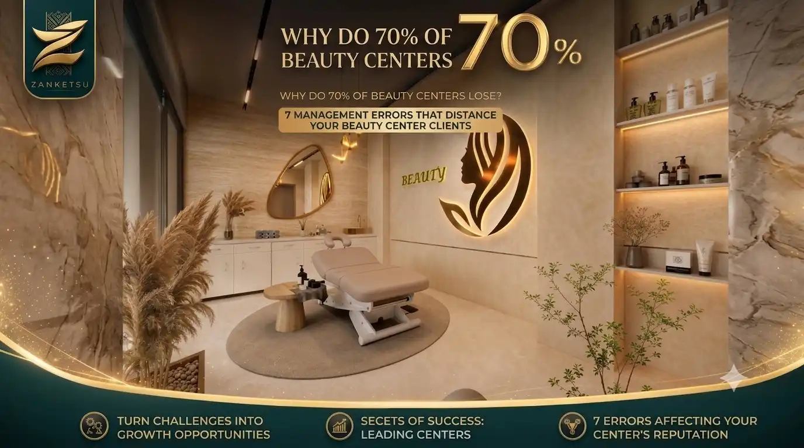

The beauty and laser center sector has been one of the most attractive sectors for investment in recent years, as demand is in constant ascent and turnout for care and beauty services increases year after year. However, a large percentage of these centers — reaching in some studies nearly 70% — face real difficulties that make them lose a large part of their customers during the first year of operation only. The paradox is that the cause in most cases does not relate to the quality of service or the skill of the team, but to the method of managing the center itself.
The quality of the cosmetic session or the result of the laser session may be excellent, but the client does not evaluate their experience based on this result alone. Delay in appointments, mixing up two bookings at the same time, or forgetting to follow up with a client after their treatment package ends are all details that seem purely administrative, but they are actually what shapes the client's final impression of the center. Many clients do not leave because of the result, but because of their feeling that they were not managed as they should be.
One of the most prominent recurrent errors in this sector is relying on scattered tools to manage work: a schedule for booking appointments, a separate book or file for follow-up with clients, and a completely separate record for the inventory of supplies and products. This dispersion makes it difficult for the center owner or the manager to form a complete picture of the work performance at any moment, and they often discover the problem too late — when they notice a drop in the number of bookings or a decline in the frequency of repeat visits by old clients.

There is also the issue of following up with the client after the first session. Many beauty centers rely heavily on marketing that attracts new clients, while not paying enough attention to following up with those who have previously dealt with them. Since the cost of retaining an existing client is much lower than the cost of attracting a new one, the weakness of this follow-up is one of the most common reasons that explain why many centers lose a large percentage of their clients despite the continued quality of their services.
The solution to these issues is not necessarily a huge investment or a radical change in the way of working, but it is often a matter of organization. When all center data — bookings, client follow-up, inventory, and financial reports — is unified in one system, it becomes easy to notice any defect before it turns into an actual problem affecting client retention. It also becomes possible to identify peak times, follow up with those who are late for their next session, and measure the performance of each service individually with greater accuracy.
Among the systems designed to address these challenges specifically in the salons and beauty centers sector is the DermaFlow-X1 system. It combines booking management, client follow-up, inventory, and reports in a single platform, allowing center owners a greater opportunity to focus on providing an integrated service, instead of having administrative organization be what separates them from retaining their clients in the long run.
Connect with ZANKETSU
Choose the platform or channel you wish to visit